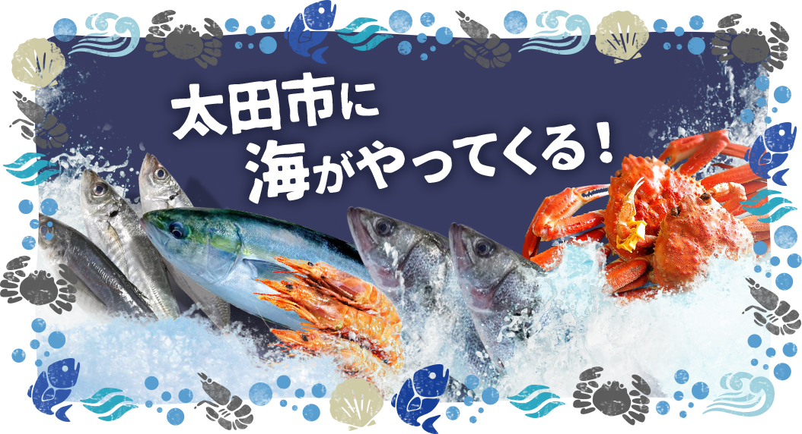

太田市の友好都市茨城県北茨城市やいわき市、日立市、豊洲の各市場から新鮮な魚介類を、毎日自社の冷凍車で集荷して太田市の皆様にいち早く提供します。
太田市の友好都市茨城県北茨城市やいわき市、日立市、豊洲の各市場から新鮮な魚介類を、毎日自社の冷凍車で集荷して太田市の皆様にいち早く提供します。
太田市との協働で、弊社の資本を投入して交流物産館を建設し、さらに弊社が永年に亘って培った経験と技術、ノウハウを活用して管理運営することにより、地域交流や観光交流など市民の更なる賑わいと新たな雇用創出や消費の拡大など地域経済の活性化を図り太田市の発展のための一翼を担う事業です。
| 職種 | 総務・経理 |
|---|---|
| 主な業務内容 | ・施設及び設備の維持管理 ・売上管理 ・集計事務 ・入金、支払事務 ・庶務全般 |
| 採用人数 | 1人 |
| 勤務時間 （実働時間） |
9.15時間（7.45時間） |
| 勤務時間 （交代勤務） |
8:45～18:00 11:45～21:00 ※ 1ヶ月単位のシフト制 |
| 休日 | 週休2日 （毎週水曜日のほかに1日） 年末年始 |
| 月額給与 | 20万円 |
| 通勤手当 | 実費支給 |
| 保険加入 | 健康保険・厚生年金・ 雇用保険・労災保険 |
| 条件・資格等 | パソコン操作 （ワード、エクセル）ができる 自動車運転免許 |
| 職種 | フロア |
|---|---|
| 主な業務内容 | ・総合案内（サービスカウンター） ・お客様対応、クレーム対応 ・レジ業務（現金収受） |
| 採用人数 | 1人 |
| 勤務時間 （実働時間） |
9.15時間（7.45時間） |
| 勤務時間 （交代勤務） |
8:45～18:00 11:45～21:00 ※ 1ヶ月単位のシフト制 |
| 休日 | 週休2日 （毎週水曜日のほかに1日） 年末年始 |
| 月額給与 | 18万円 |
| 通勤手当 | 実費支給 |
| 保険加入 | 健康保険・厚生年金・ 雇用保険・労災保険 |
| 条件・資格等 | 経験者優遇 自動車運転免許 |
| 職種 | 総務・経理 | フロア |
|---|---|---|
| 主な業務内容 | ・施設及び設備の維持管理 ・売上管理 ・集計事務 ・入金、支払事務 ・庶務全般 |
・総合案内（サービスカウンター） ・お客様対応、クレーム対応 ・レジ業務（現金収受） |
| 採用人数 | 1人 | 1人 |
| 勤務時間 （実働時間） |
9.15時間（7.45時間） | |
| 勤務時間 （交代勤務） |
8:45～18:00 11:45～21:00 ※ 1ヶ月単位のシフト制 |
|
| 休日 | 週休2日 （毎週水曜日のほかに1日） 年末年始 |
|
| 月額給与 | 20万円 | 18万円 |
| 通勤手当 | 実費支給 | |
| 保険加入 | 健康保険・厚生年金・ 雇用保険・労災保険 | |
| 条件・資格等 | パソコン操作 （ワード、エクセル）ができる 自動車運転免許 |
経験者優遇 自動車運転免許 |
| 職種 | 総務・経理 |
|---|---|
| 主な業務内容 | ・施設及び設備の維持管理 ・売上管理 ・集計事務 ・入金、支払事務 ・庶務全般 |
| 採用人数 | 2人 |
| 勤務時間 （実働時間） |
6.5時間（5.5時間） |
| 勤務時間 （交代勤務） |
9:00～15:30 14:30～21:00 ※ 1ヶ月単位のシフト制 |
| 休日 | 週休2日 （毎週水曜日のほかに1日） 年末年始 |
| 時間給 | 900円 土、日、祝日出勤は 100円加算 |
| 通勤手当 | 実費支給 |
| 保険加入 | 雇用保険・労災保険 |
| 条件・資格等 | パソコン操作 （ワード、エクセル）ができる 自動車運転免許 |
| 職種 | レジ |
|---|---|
| 主な業務内容 | ・レジ業務（現金収受） |
| 採用人数 | 8人 |
| 勤務時間 （実働時間） |
6.0時間（5.0時間） |
| 勤務時間 （交代勤務） |
9:00～15:00 15:00～21:00 ※ 1ヶ月単位のシフト制 |
| 休日 | 週休2日 （毎週水曜日のほかに1日） 年末年始 |
| 時間給 | 900円 土、日、祝日出勤は 100円加算 |
| 通勤手当 | 実費支給 |
| 保険加入 | 雇用保険・労災保険 |
| 条件・資格等 | 経験者優遇 |
| 職種 | 水産物 調理・加工 |
|---|---|
| 主な業務内容 | ・魚介類の選定発注、仕入れ ・魚介類の荷捌き、加工 ・惣菜（寿司、天ぷら）の調理 ・配達 |
| 採用人数 | 6人 |
| 勤務時間 （実働時間） |
7.5時間（6.5時間） |
| 勤務時間 （交代勤務） |
6:30～14:00 13:30～21:00 ※ 1ヶ月単位のシフト制 |
| 休日 | 週休2日 （毎週水曜日のほかに1日） 年末年始 |
| 時間給 | 900円 土、日、祝日出勤は 100円加算 |
| 通勤手当 | 実費支給 |
| 保険加入 | 健康保険・厚生年金・ 雇用保険・労災保険 |
| 条件・資格等 | 経験者優遇 自動車運転免許 調理師免許、食品衛生管理者資格があれば尚可 |
| 職種 | 食肉 調理・加工 |
|---|---|
| 主な業務内容 | ・精肉、加工品、惣菜の販売 ・惣菜(コロッケ、メンチ等)の調理 |
| 採用人数 | 3人 |
| 勤務時間 （実働時間） |
9.0時間（8.0時間） |
| 勤務時間 （交代勤務） |
8:00～17:00 10:00～19:00 ※ 1ヶ月単位のシフト制 |
| 休日 | 週休2日 （毎週水曜日のほかに1日） 年末年始 |
| 時間給 | 900円 土、日、祝日出勤は 100円加算 |
| 通勤手当 | 実費支給 |
| 保険加入 | 健康保険・厚生年金・ 雇用保険・労災保険 |
| 条件・資格等 | 経験者優遇 調理師免許があれば尚可 |
| 職種 | 総務・経理 | レジ | 水産物 調理・加工 | 食肉 調理・加工 |
|---|---|---|---|---|
| 主な業務内容 | ・施設及び設備の維持管理 ・売上管理 ・集計事務 ・入金、支払事務 ・庶務全般 |
・レジ業務（現金収受） | ・魚介類の選定発注、仕入れ ・魚介類の荷捌き、加工 ・惣菜（寿司、天ぷら）の調理 ・配達 |
・精肉、加工品、惣菜の販売 ・惣菜(コロッケ、メンチ等)の調理 |
| 採用人数 | 2人 | 8人 | 6人 | 3人 |
| 勤務時間 （実働時間） |
6.5時間（5.5時間） | 6.0時間（5.0時間） | 7.5時間（6.5時間） | 9.0時間（8.0時間） |
| 勤務時間 （交代勤務） |
9:00～15:30 14:30～21:00 ※ 1ヶ月単位のシフト制 |
9:00～15:00 15:00～21:00 ※ 1ヶ月単位のシフト制 |
6:30～14:00 13:30～21:00 ※ 1ヶ月単位のシフト制 |
8:00～17:00 10:00～19:00 ※ 1ヶ月単位のシフト制 |
| 休日 | 週休2日 （毎週水曜日のほかに1日） 年末年始 |
|||
| 時間給 | 900円 土、日、祝日出勤は 100円加算 |
|||
| 通勤手当 | 実費支給 | |||
| 保険加入 | 雇用保険・労災保険 | 健康保険・厚生年金・ 雇用保険・労災保険 | ||
| 条件・資格等 | パソコン操作 （ワード、エクセル）ができる 自動車運転免許 |
経験者優遇 | 経験者優遇 自動車運転免許 調理師免許、食品衛生管理者資格があれば尚可 |
経験者優遇 調理師免許があれば尚可 |
太田市飯塚町 69番 3
おおた・北茨城交流物産館 バスターミナル駅
※ ＢＵＳターミナルおおた敷地内
8月下旬
～7月末日
随時（応募者に具体的な日程と場所を連絡いたします）
お電話 → 履歴書・職務経歴書提出 → 担当者からご連絡 → 面接 → 内定
ご応募の方は下記へお電話ください。
株式会社大雄建設 生鮮物流部 川田